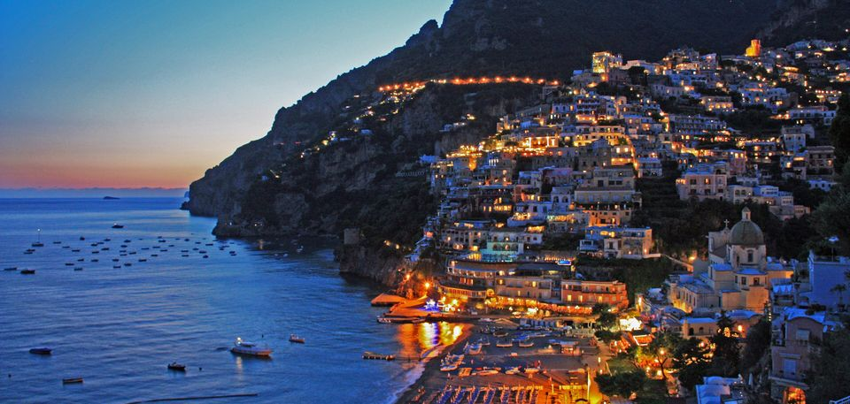

Guides
Trips you can open and make your own
Every guide here is a real trip built in Roamly's AI planner, checked stop by stop and written up with the times, costs and map from the app. Open one in Roamly and change anything.

7 Days on the Amalfi Coast and in Sicily: Positano, Capri, Ravello and Taormina
Three nights in Positano with a boat day on Capri and a walk from Ravello down to Amalfi, then a short flight to Sicily for three nights in Taormina, Etna's vineyards and the beach at Isola Bella.
Read the guide →7 Days in Tokyo and Hakone: Neon Nights, Hot Springs and Mount Fuji
Four unhurried days in Tokyo, split by neighborhood, then two nights in Hakone where the trains slow down, the baths get hotter and Mount Fuji fills the far end of Lake Ashi on a clear morning.
Read the guide →